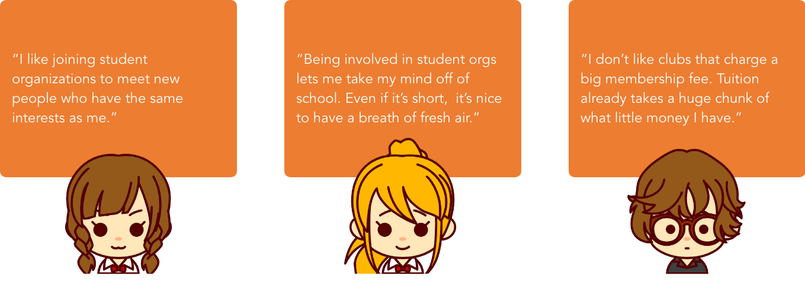
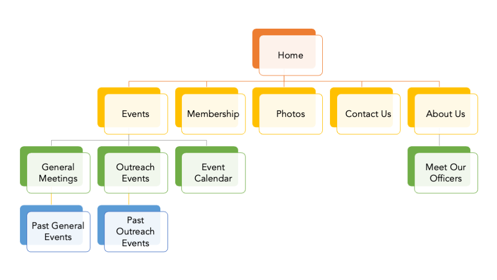

Research
Officer Interviews
To scope out what the pain points were for the website, I conducted stakeholder interviews with the 2019 - 2020 officers. Among the questions were...
- What do you think of the current website?
- What is missing from the website that you would like to promote for the organization?
- When you were a student interested in joining the Chemistry Student Association, would you have found the current site helpful? Why or why not?
The three main concerns that the officers had were:
- Current CSA members view the Facebook page to keep up to date with events. The website is tailored for students who want to become members and are looking for more information about the club.
- CSA sells lab equipment like goggles and carbon copy notebooks during the beginning of the year for two weeks at a booth. Flyers are hung around campus to advertise that. However, the officers would like to indicate that they still sell materials on their site throughout the semester.
- Events are generally posted on Google Calendars then duplicated onto the Facebook page. Officers find it redunant to add another set of event information onto their website.
Overall, the team wanted to create a pleasant experience for UTD students who are interested in the Chemistry Student Association at The University of Texas at Dallas to go onto the page to learn more about the benefits for the club as well as upcoming events.
Student Surveys
To understand the pain points that users have when searching for a student organization and their resources, I conducted an interview to gain insight on potential members. I wanted to learn more about interviewees':
- General experience with student organizations
- Motivations to join the organization
- Concerns the students had to joining
After interviewing 5 individuals, these were some of the main quotes I pulled:

Surveys to 15 students were also gathered regarding if students knew the Chemistry Student Association sold lab equipment after the two-week period and for an affordable price.
User Personas
Using the data gathered from the interviews and surveys, there are two types of users who would use the site:
Students interested in joining CSA at UTD (Primary)
Students looking to purchase lab equipment for a specific course (Primary)
Website Design
User Flow
I started with determining the possible user flow as each persona landed on the website. As I was doing this, I realized I could make the Membership page more fluid for Sarah who is looking to join CSA by adding in recommendations after they requested to join the mailing list. Both of the user flows are as follows:
Information Architecture Visualization
Per the interviews I had with the officers, it was clear that the team wanted a simpler design of the website. Therefore, some items would be taken out. Because this was a redesign for the website, there were several areas that didn't need a complete overhaul, such as the About section or Membership section. This is the current information architecture:

Based on the interviews, this could be simplified, taking away the excess items underneath Events and bucketing photos. In addition, the page to purchase lab materials would be added in:
Wireframes
After conducting the initial research, a Nielson Heuristics evaluation, and establishing the wireframe, the next goal was to create wireframes and gather feedback from the design. I discussed ideas for interfaces and potential journeys with the organization's webmaster.
The one page that wasn't already previously established was the Buy Lab Equipment page. In addition, the Events page was shrunk down to contain just the calendar, and the About Us page merged with the Meet Our Officers page. Feel free to view a slideshow of the original design to compare the changes made.
Feel free to play with the prototype!
Reflection
What did I learn?
I loved getting the opportunity to work with one of the student organizations at UTD. I’m pleased with the outcome of the new website design. I primarily worked with the Webmaster for the majority of the project. We established the initial wireframe and design together, and she gave me plenty of feedback during the design process along with her officers. After presenting the final product, the team was happy with the design.
Next steps?
Unfortunately, I couldn't find many related images for me to work with. Therefore, some of the hero images are out of focus. However, I am working with the webmaster to implement this design. If I were to continue working with CSA, I would like to do user testing for interested students who want to join the Chemistry Student Association and conduct surveys to see how they like interacting with the website. Then, I would make changes as necessary with the research I collect.